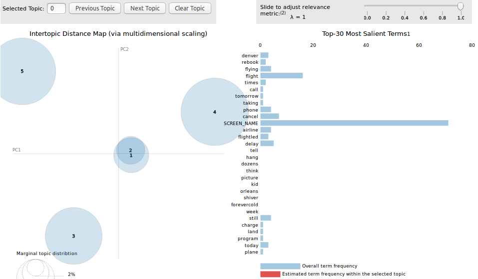

Project iterations
Example code playground and architecture project definition
This is where we can explain about the ML script, what and how did we do. The picture could be a screenshot of a confusion matrix or the script itself.

university project archive
This is the project documentation for the happybirds team’s solution for the capstone project during the postgraduate Data science and big data course of the University of Barcelona. Find more information about the program here. The tasks were to develop a machine learning algorithm for an annotated dataset and to analyze the dataset for insights. Hereby we present what our team has done and what technologies we have used.
For the solution presented below, we have developed a project in python that has all the tools needed to run the necessary phases to import, transform, train, validate, test and optimize for a tweet sentiment classification. All codes are available in this Github repository.
The problem to be solved is an airline sentiment tweet classification. The teams received two datasets: one in English tweets already classified and a second one in Spanish – to be classified by the students of the postgraduate course on a platform designed for this task.
The main motivation on working on a python project instead on doing it in a lengthy Jupyter Notebook was the flexibility a project has in terms of code sharing. Versioning a Jupyter Notebook can potentially be a bad idea taking into account that it stores all the results within. As a consequence, each time a team member re-executes even just one cell locally, Git recognises it as a change and asks to commit it. There is a way to avoid this phenomenon by cleaning the notebook output each time a team member pulls or pushes changes. However, this can easily be forgotten causing a subsequent caos. On the other hand, having a final version as a python project enables any team member to execute the parts in the way she prefers. Also, it allows the team members to go as deep as they want if the code is correctly modularized. Finally, each team member has the chance to do this call by using her own Jupyter Notebook, iPython or even directly from the developing tool.
The sections below cover the the in-depth description of the steps taken towards the final solution in a chronological order, the results obtained, and the next steps that could have been potentially done on the Spanish dataset.
The project documentation covers the following:
This is where we can explain about the ML script, what and how did we do. The picture could be a screenshot of a confusion matrix or the script itself.
Ad hoc analysis of a heavily unbalanced dataset, or What was wrong with Iberia?
The Spanish tweets dataset contains 7867 tweets from October 25, 2017 to January 8, 2018 downloaded using the keywords AirEurope, Spanair, Ryanair, Iberia, Aireurope, and Norwegianairline. As discussed above, the tweets' sentiments were annotated by the students of the postgrad course. The chart below shows the distribution of the number of tweets by each sentiment: neutral, positive, and negative. The busiest day was December 14, 2017 – most of the tweets issued on that day being negative.

If we look for the airlines mentioned, we see that it was Iberia, which was mentioned mostly on December 12, 2017. Actually, out of all airlines, mostly Iberia and Ryanair were mentioned in the tweets. Alltogether Iberia was mentioned 5100 times, whiel Ryanair 1938 and Vueling 204 times. All the rest were way below 200 mentions in the analyzed period. Thus we are focusing on Iberia.

But in what context were the airlines mentioned? The table below shows the rank of each word in terms of number of ocurrence by airline. (The word "url" are all links replaced by the word "url".)
| rank | Iberia | Ryanair | Vueling | Spanair |
|---|---|---|---|---|
| 1 | @iberia | ryanair | url | spanair |
| 2 | url | url | @vueling | url |
| 3 | iberia | @ryanair | vueling | accidente |
| 4 | vuelo | pilotos | @iberia | españa |
| 5 | hola | huelga | iberia | video |
| 6 | solo | vuelos | ryanair | vuelo |
| 7 | gracias | vuelo | @ryanair | letal |
| 8 | mejor | españa | compañía | cadas |
| 9 | destino | avión | vuelo | barajas |
| 10 | madrid | euros | vuelos | canal |
Here we will discuss the topic modelling, but let's see how to visualize it. Please note that this is not the final version of the topic modelling.
We can show the topic modelling like an embedded website:
Or as a picture working as a link:
and if needed, even more